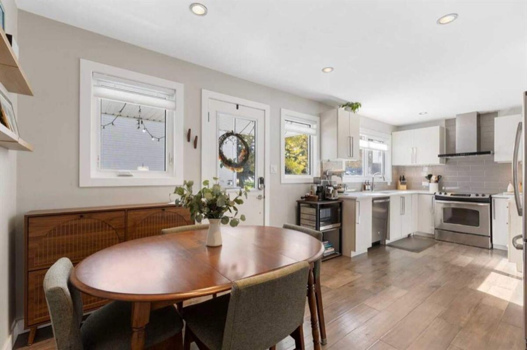
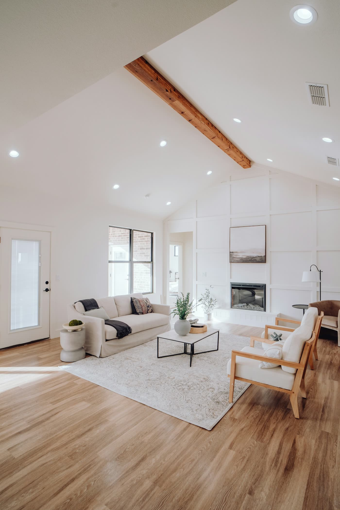
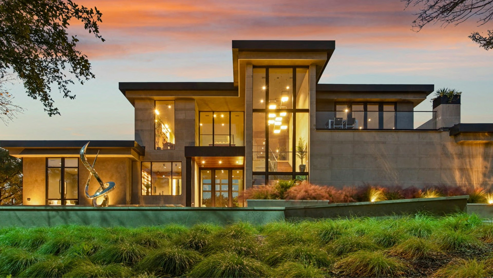

Killarney
364 Killarney Glen Court SW
Calgary, Alberta T3E 7H4
- Beds
- 2
- Baths
- 3
- Sq ft
- 1,082
$399,000
View homeListed Oct 7, 2026. Courtesy of Century 21 Bamber Realty Ltd.

Rose Calvelo designs and builds luxury custom homes in Calgary. Every project starts with your vision and ends with something extraordinary.
New to market in Calgary, AB
The Vision
Before a single line is drawn, we listen. Your daily rhythms, the light you love, the feeling you want when you walk through the front door. These details become the foundation of everything we build.
No templates, no compromises, no shortcuts. Just homes that reflect the people who live in them.
Our Approach
01
We spend time understanding how you live, what you value, and what extraordinary means to you.
02
Every detail is drawn with intention. Architecture, materials, and light planned as one composition.
03
A curated team of craftspeople executes with the precision that luxury demands.
04
The moment you walk through your front door and realize this is exactly what you imagined.
From Vision to Reality

The Team
Led by Rose Calvelo, who spent years managing custom home builds before moving into real estate, the team pairs a builder's eye for structure and finish with deep knowledge of Calgary's market.
Team Leader
Learned construction from her father, an engineer and home builder, then ran new builds as lead project manager for a Calgary custom home builder before a decade representing buyers and sellers.
Operations Manager
Eight years in real estate operations. Megan runs the team day to day and makes sure nothing falls through the cracks, for agents and clients alike.
Real Estate Advisor
A mother of two who knows what a family home has to hold. Fatima listens first, then guides every client with care and transparency.
Real Estate Advisor
Fluent in English, Russian and Ukrainian, Roman brings an athlete's discipline to helping clients make informed, long-term decisions.
Real Estate Advisor
Born and raised in Calgary, Xavier knows its neighbourhoods first hand and promises prompt answers, straightforward advice and strong negotiation.
Rose Calvelo Team at eXp Realty. #210, 739 11 Avenue SW, Calgary. (403) 998-0287
Your next home should be the most remarkable thing on the street. We would like to hear what that means to you.
Book a Consultation